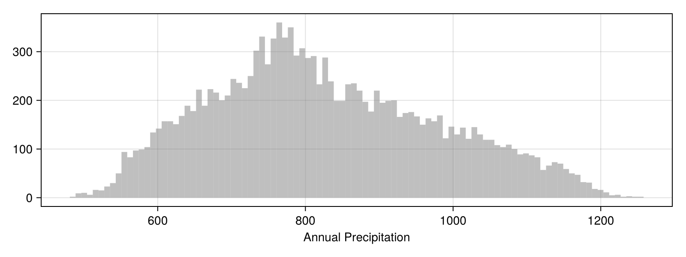
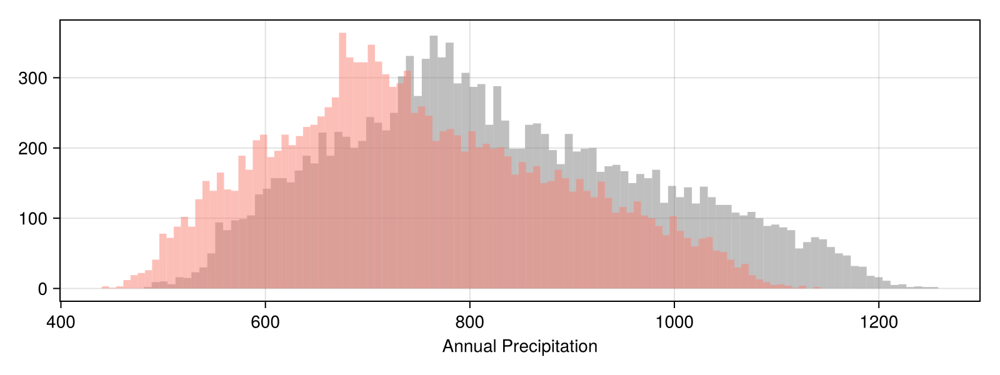
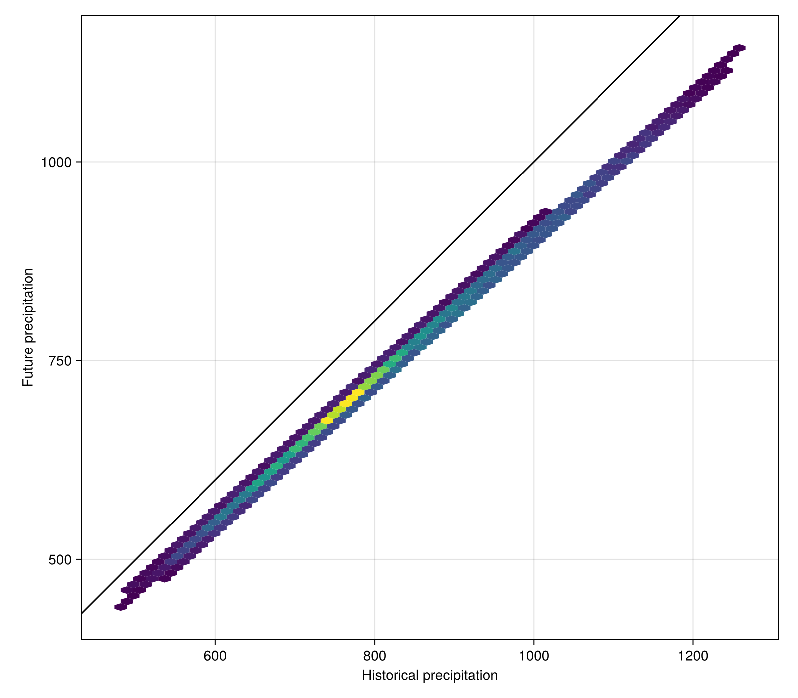

Future climate data
The purpose of this vignette is to show how precipitation will change in Corsica under a specific climate change scenario, and to map the results.
using SpeciesDistributionToolkit
using Dates
using CairoMakieAs with other vignettes, we will define a bounding box encompassing out region of interest:
spatial_extent = (left = 8.412, bottom = 41.325, right = 9.662, top = 43.060)(left = 8.412, bottom = 41.325, right = 9.662, top = 43.06)We will get the BioClim data from CHELSA v1. CHELSA v1 offers access to the 19 original bioclim variable, and their projection under a variety of CMIP5 models/scenarios. These are pretty large data, and so this operation may take a while in terms of download/read time. The first time you run this command will download the data, and the next calls will read them from disk.
dataprovider = RasterData(CHELSA1, BioClim)RasterData{CHELSA1, BioClim}(CHELSA1, BioClim)We can search the layer that correspond to annual precipitation in the list of provided layers:
findall(v -> contains(v, "Annual Precipitation"), SimpleSDMDatasets.layerdescriptions(dataprovider))1-element Vector{String}:
"BIO12"In the BioClim parlance, isothermality is "BIO12", so this is the layer we will request. We wrap this inside a tuple to make the subsequent function calls faster to write.
data_info = (layer = "BIO12",)(layer = "BIO12",)Note that we do not need to give the bounding box and layer data as distinct variables, but this is more convenient in terms of code re-use. For this reason, we follow this convention throughout this document.
The first step is quite simply to grab the reference state for the annual precipitation, by specifying the layer and the spatial extent:
current = SDMLayer(dataprovider; data_info..., spatial_extent...)SDM Layer with 14432 Int16 cells
Proj string: +proj=longlat +datum=WGS84 +no_defs
Grid size: (209, 151)We can have a little look at this dataset by checking the density of the values for temperature (we can pass a layer to a Makie function directly):
hist(
current; color = (:grey, 0.5),
figure = (; size = (800, 300)),
axis = (; xlabel = "Annual Precipitation"),
bins = 100
)
In the next step, we will download the projected climate data under RCP26. This requires setting up a projection object, which is composed of a scenario and a model. This information is used by the package to verify that this combination exists within the dataset we are working with.
projection = Projection(RCP85, IPSL_CM5A_MR)Projection{RCP85, IPSL_CM5A_MR}(RCP85, IPSL_CM5A_MR)Future data are available for different years, so we will take a look at what years are available:
SimpleSDMDatasets.timespans(dataprovider, projection)2-element Vector{Pair{Year, Year}}:
Year(2041) => Year(2060)
Year(2061) => Year(2080)If we do not specify an argument, the data retrieved will be the ones for the closest timespan. Getting the projected temperature is the same call as before, except we now pass an additional argument – the projection.
projected = SDMLayer(dataprovider, projection; data_info..., spatial_extent..., timespan = Year(2061) => Year(2080))SDM Layer with 14432 Int16 cells
Proj string: +proj=longlat +datum=WGS84 +no_defs
Grid size: (209, 151)With this information, we can update the existing figure, to add a second panel with the difference in temperature:
hist!(projected, color=(:salmon, 0.5), bins=100)
We can also very easily look at the relationship between current and future climate (the scatter function would work just as well, but hexbin is good at aggregating cells with more datapoints):
hexbin(
current,
projected;
bins = 100,
figure = (; size = (800, 700)),
axis = (;
aspect = DataAspect(),
xlabel = "Historical precipitation",
ylabel = "Future precipitation",
),
)